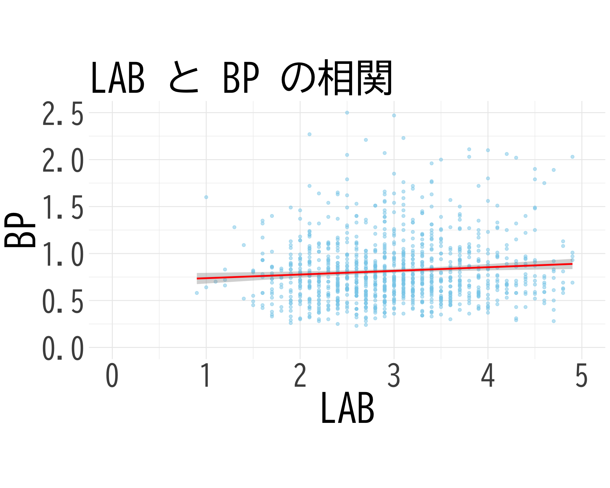

弘前データ１：法定検診との関係
ここではまずデータの視覚化を行い，概要をつかむ． 次節から階層モデリングを目指す．
4/27/2025
司馬博文
4/29/2025
| 受診日年齢 | 性別 | Weight | BP | BP備考 | 判別式 | LOX-1_H | LAB_H | LOX-index_H | タイプ | 多様性 | item1 | item2 | item3 | item4 | item5 | item6 | item7 | item8 | item9 | item10 | item11 | item12 | item13 | item14 | item15 | item16 | item17 | item18 | BP_A_flag | 年代 | 活気 | イライラ感 | 疲労感 | 不安感 | 抑うつ感 |
|---|---|---|---|---|---|---|---|---|---|---|---|---|---|---|---|---|---|---|---|---|---|---|---|---|---|---|---|---|---|---|---|---|---|---|---|
| 64 | 2 | 54.2 | 1.08 | ABDG | -2.880 | 86 | 2.6 | 224 | B | 2 | 2 | 2 | 2 | 1 | 1 | 1 | 1 | 1 | 1 | 1 | 1 | 1 | 1 | 1 | 1 | 1 | 1 | 1 | 1 | 60代 | 3 | 1 | 1 | 1 | 1 |
| 48 | 2 | 52.7 | 0.47 | B | -3.343 | 75 | 2.2 | 165 | B | 2 | 2 | 2 | 2 | 2 | 2 | 2 | 4 | 3 | 2 | 3 | 2 | 2 | 2 | 2 | 1 | 2 | 3 | 2 | 0 | 40代 | 3 | 3 | 4 | 3 | 3 |
| 53 | 2 | 64.8 | 0.67 | BDG | -2.727 | 55 | 2.8 | 154 | A | 1 | 3 | 1 | 1 | 1 | 1 | 2 | 3 | 3 | 3 | 2 | 2 | 2 | 2 | 2 | 1 | 1 | 1 | 1 | 0 | 50代 | 4 | 2 | 4 | 3 | 2 |
| 46 | 1 | 76.3 | 1.10 | NA | -2.974 | 136 | 3.8 | 517 | B | 2 | 2 | 3 | 3 | 2 | 2 | 2 | 1 | 1 | 2 | 2 | 2 | 1 | 2 | 2 | 1 | 1 | 1 | 1 | 0 | 40代 | 2 | 3 | 2 | 3 | 2 |
| 65 | 1 | 72.4 | 0.88 | D | -7.338 | 58 | 2.3 | 133 | C | 2 | 3 | 3 | 3 | 2 | 2 | 2 | 1 | 1 | 1 | 2 | 1 | 1 | 1 | 1 | 1 | 1 | 1 | 1 | 0 | 60代 | 2 | 3 | 1 | 2 | 1 |
| 30 | 1 | 59.5 | 0.76 | NA | -2.776 | 46 | 2.2 | 101 | B | 2 | 2 | 2 | 2 | 3 | 4 | 3 | 3 | 3 | 3 | 4 | 4 | 3 | 3 | 3 | 3 | 3 | 1 | 1 | 0 | 30代 | 3 | 5 | 4 | 5 | 4 |
mdf <- df[, c(1:11, 30:36)]
colnames(mdf) <- gsub("_H$", "", colnames(mdf))
colnames(mdf) <- gsub("LOX-1", "LOX", colnames(mdf)) # LOX-1をLOXに
colnames(mdf) <- gsub("LOX-index", "LI", colnames(mdf)) # LOX-indexをLIに
kable(head(mdf))| 受診日年齢 | 性別 | Weight | BP | BP備考 | 判別式 | LOX | LAB | LI | タイプ | 多様性 | BP_A_flag | 年代 | 活気 | イライラ感 | 疲労感 | 不安感 | 抑うつ感 |
|---|---|---|---|---|---|---|---|---|---|---|---|---|---|---|---|---|---|
| 64 | 2 | 54.2 | 1.08 | ABDG | -2.880 | 86 | 2.6 | 224 | B | 2 | 1 | 60代 | 3 | 1 | 1 | 1 | 1 |
| 48 | 2 | 52.7 | 0.47 | B | -3.343 | 75 | 2.2 | 165 | B | 2 | 0 | 40代 | 3 | 3 | 4 | 3 | 3 |
| 53 | 2 | 64.8 | 0.67 | BDG | -2.727 | 55 | 2.8 | 154 | A | 1 | 0 | 50代 | 4 | 2 | 4 | 3 | 2 |
| 46 | 1 | 76.3 | 1.10 | NA | -2.974 | 136 | 3.8 | 517 | B | 2 | 0 | 40代 | 2 | 3 | 2 | 3 | 2 |
| 65 | 1 | 72.4 | 0.88 | D | -7.338 | 58 | 2.3 | 133 | C | 2 | 0 | 60代 | 2 | 3 | 1 | 2 | 1 |
| 30 | 1 | 59.5 | 0.76 | NA | -2.776 | 46 | 2.2 | 101 | B | 2 | 0 | 30代 | 3 | 5 | 4 | 5 | 4 |
library(ggplot2)
mini_df <- df[df$BP_A_flag == 0, c("BP", "LAB_H")]
colnames(mini_df) <- c("BP", "LAB")
ggplot(mini_df, aes(x = LAB, y = BP)) +
geom_point(alpha = 0.5, color = "skyblue") +
geom_smooth(method = "lm", color = "red", se = TRUE) +
theme_minimal() +
labs(title = "LAB と BP の相関",
x = "LAB",
y = "BP") +
theme(
text = element_text(family = "BIZUDGothic-Regular", size = 12),
axis.text = element_text(size = 34),
axis.title = element_text(size = 45),
plot.title = element_text(size = 45)
) +
# 両軸のスケールを同じに
coord_fixed(ratio = 1) +
# 軸の範囲を-3から3に設定（標準偏差の±3倍程度）
scale_x_continuous(limits = c(0, 5)) +
scale_y_continuous(limits = c(0, 2.5))`geom_smooth()` using formula = 'y ~ x'Warning: Removed 55 rows containing non-finite outside the scale range
(`stat_smooth()`).Warning: Removed 55 rows containing missing values or values outside the scale range
(`geom_point()`).
Loading required package: RcppLoading 'brms' package (version 2.21.0). Useful instructions
can be found by typing help('brms'). A more detailed introduction
to the package is available through vignette('brms_overview').
Attaching package: 'brms'The following object is masked from 'package:stats':
arformula <- bf(
BP ~ 1 + LAB + LOX + LI
)
fit <- brm(
formula,
data = df_norm,
family = gaussian(),
chains = 4,
iter = 4000,
cores = 4
)Warning: Rows containing NAs were excluded from the model.Compiling Stan program...Start sampling Family: gaussian
Links: mu = identity; sigma = identity
Formula: BP ~ 1 + LAB + LOX + LI
Data: df_norm (Number of observations: 1124)
Draws: 4 chains, each with iter = 4000; warmup = 2000; thin = 1;
total post-warmup draws = 8000
Regression Coefficients:
Estimate Est.Error l-95% CI u-95% CI Rhat Bulk_ESS Tail_ESS
Intercept -0.00 0.03 -0.06 0.06 1.00 4494 4420
LAB 0.07 0.04 -0.02 0.16 1.00 3261 4176
LOX 0.02 0.27 -0.52 0.55 1.00 2817 3630
LI 0.04 0.27 -0.50 0.57 1.00 2828 3685
Further Distributional Parameters:
Estimate Est.Error l-95% CI u-95% CI Rhat Bulk_ESS Tail_ESS
sigma 1.00 0.02 0.96 1.05 1.00 5038 5215
Draws were sampled using sampling(NUTS). For each parameter, Bulk_ESS
and Tail_ESS are effective sample size measures, and Rhat is the potential
scale reduction factor on split chains (at convergence, Rhat = 1).